Apps con BitTorrent
Presentado por Luis Porras / @lporras16
 Ruby/Javascript Developer en Selfie.com
Ruby/Javascript Developer en Selfie.com
Barranquilla Y Concepción
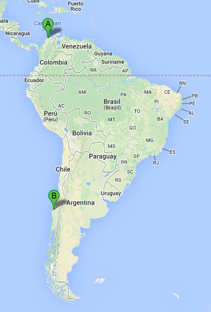
¿Conocen BitTorrent?
- Protocolo para Intercambio de archivos peer-to-peer
- Comunmente usado para transferir archivos grandes
- Favorito de piratas
Creado por
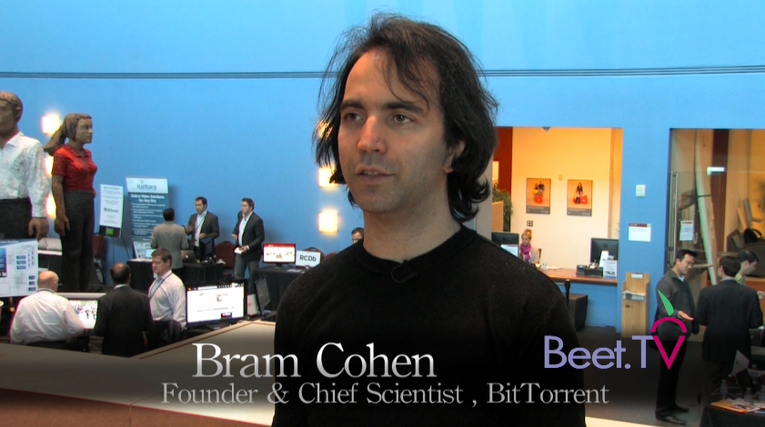
Muerte de Un Grande

RENACE LA LEYENDA
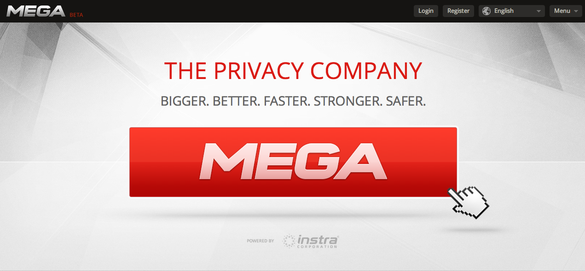
UnOfficial Mega Search Portal
UnOfficial Mega Video Streamming Portal
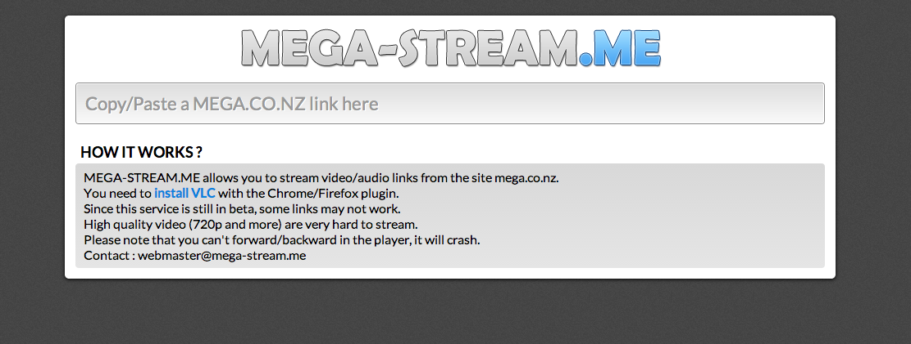
Aclaraciones Importantes
Por favor NO APOYEN LA PIRATERIA
Esta charla no es para aprender a piratear
Yo no soy un pirata
Estructura de una Red BitTorrent
- Peers: (Puntos) Todos los usuarios de la Red
- Leechers: (Sanguijuelas) Usuarios que descargan archivos pero no comparten
- Seeders: (Semillas) Usuarios que contienen el archivo completo
- Trackers: (Rastreadores) Servidor especial que tiene información necesaría para que los peers se conecten unos a otros
The Swarm (Enjambre)
Los Usuarios que los trackers se encargan de buscar.
Analogía
Tracker, panal de abejas.
Enjambre, los usuarios.
La miel, el contenido del torrent
Clientes Torrents

Mejoras al Protocolo
Index of BitTorrent Enhancement Proposals
Mejoras al Protocolo
DHT (Distritbued Hash Table)
Cada Nodo conserva info de los nodos vecinos
Evitando un cuello de botella en la caida de un Tracker
Los clientes Torrent tienen la funcionalidad de desactivar el DHT con "Private Flag"
Mejoras al Protocolo
Web Seeding
Busca combinar la potencia de la descarga directa del servidor con la del P2P.
Hay como mínimo una semilla completa de la que descargar siempre
Mejoras al Protocolo
Super Seeding
Ayuda a reducir el número de piezas que el 1er seed debe subir para crear las primeras semillas
Limitaciones
Leeching: Normalmente los usuarios se desconectan rápidamente una vez obtenido la copia completa de su archivo.
Para evitar esto han aparecido los denominados trackers privados. Normalmente para usar un tracker privado hay que identificarse previamente.
Sitios Relacionados a Torrent
Búscador más Famoso
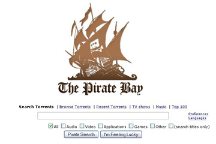
Universidad de Stanford
Torrent Freak
PUT IO
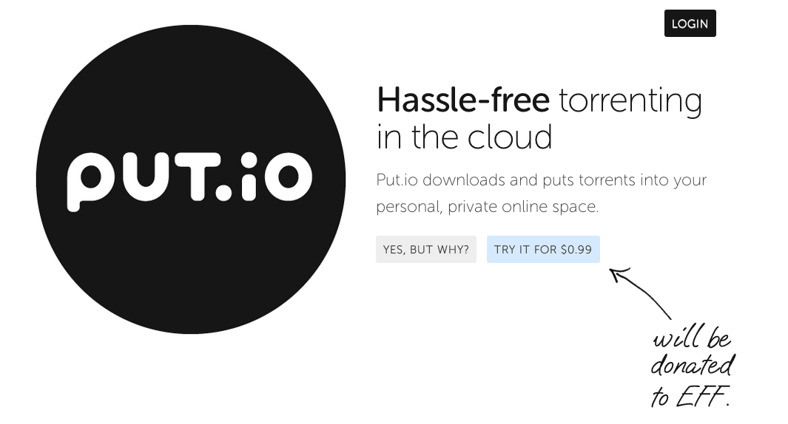
HIVE
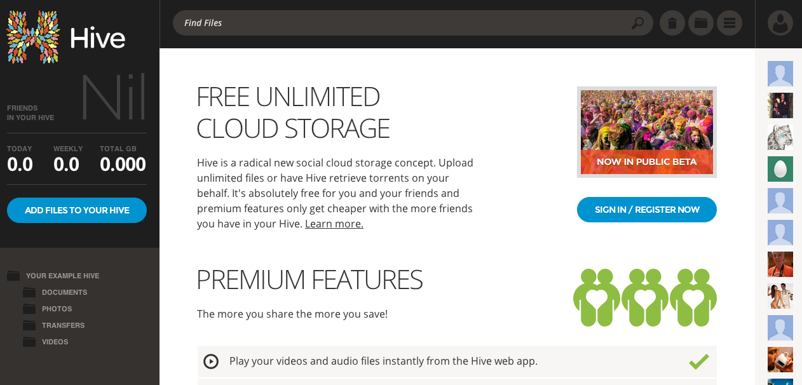
BTAPPS LAB
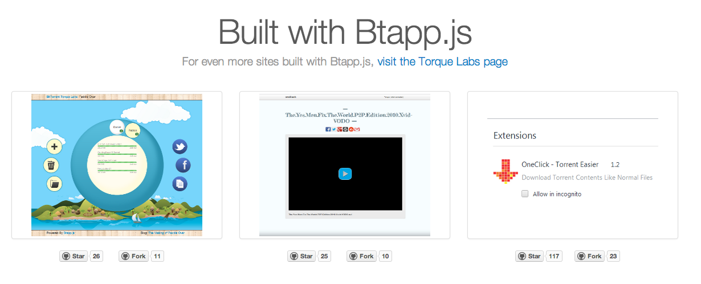
Yify Torrent Plugin
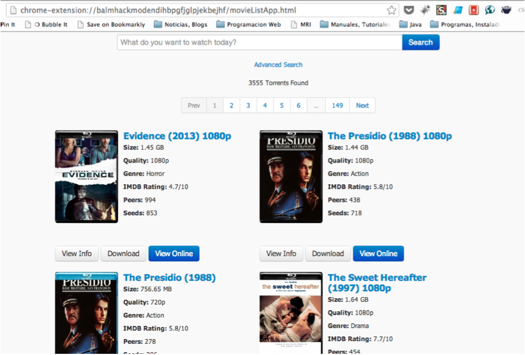
Yify Torrent Plugin in Action
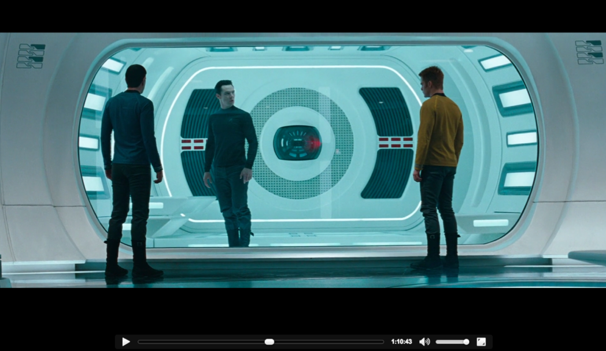
viejito, y los smartphones?
UTORRENT
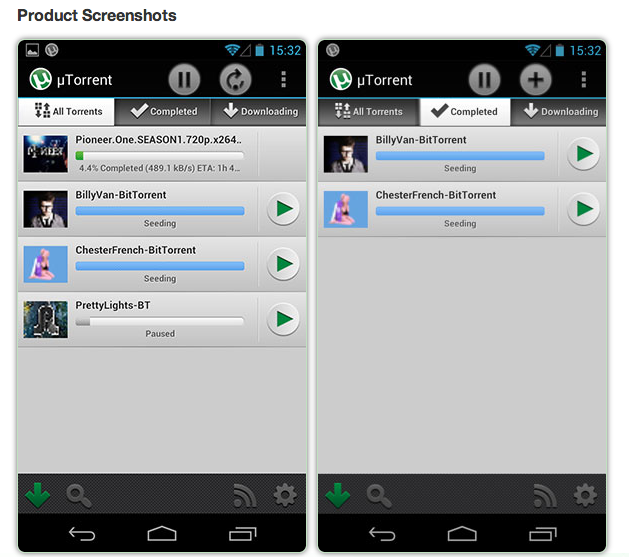
Suficiente de Historia
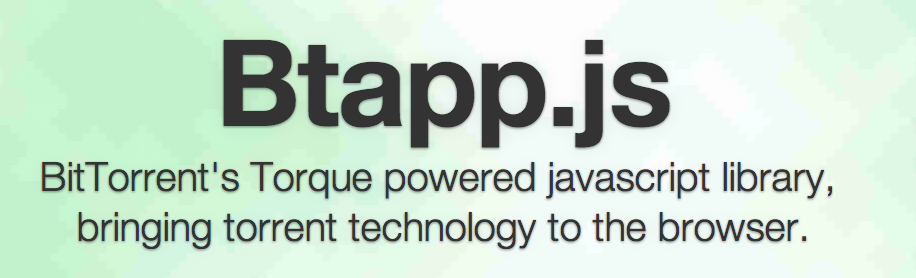
¿Qué es Btapp.js?
- Librería Javascript
- Desarrollada por BitTorrent Inc.
- Permite administrar torrents y muchas cosas más
Funcionalidades Interesantes
- Incluye: Torque, un cliente torrent Headless
- Compatibilidad con versiones alfa de BitTorrent y uTorrent (version 3.3 en adelante)
- Streamming mientras la descarga está en proceso
- Mover archivos a iTunes
- Seleccionar archivos a Descargar
Dependencias
Dependencias
Btapp.js depente fuertemente de jQuery, Backbone, Json2 y jStorage
- <script src="http://code.jquery.com/jquery-1.7.2.min.js"></script>
- <script src="http://cdnjs.cloudflare.com/ajax/libs/json2/20110223/json2.js"></script>
- <script src="http://underscorejs.org/underscore-min.js"></script>
- <script src="http://backbonejs.org/backbone-min.js"></script>
- <script src="https://raw.github.com/andris9/jStorage/master/jstorage.js"></script>
Dependencias
Backbrace es altamente recomendado, para aliviar algunos de los problemas que podrías tener usando árboles profundos de modelos y colecciones.
- <script src="https://raw.github.com/bittorrenttorque/backbrace/master/backbrace.js"></script>
Código Fuente
- <script src="http://torque.bittorrent.com/btapp/btapp.min.js"></script>
Compatibilidad del API
Compatibilidad del API
Por defecto, el Api tratará de usar Torque
lo que significa, facilita la instalación de un plugin, y el mencionado cliente torrent Si no se encuentra.
Conectarse a Clientes Torrents
Torque
//Se conecta a Torque (por Defecto)
var btapp = new Btapp;
btapp.connect();
O...
//Usando la sintáxis de plugin
var btapp = new Btapp;
btapp.connect({
product: 'Torque'
plugin: true
});
Conectarse a Clientes Torrents
uTorrent
var btapp = new Btapp;
btapp.connect({
product: 'uTorrent',
plugin: false,
pairing_type: 'native'
});
BitTorrent
var btapp = new Btapp;
btapp.connect({
product: 'BitTorrent',
plugin: false,
pairing_type: 'native'
});
Fragmentos de Código
Advertencia Asíncrona
No Hacer
var btapp = new Btapp();
btapp.connect();
btapp.get('torrent').each(function(torrent) {
torrent.remove();
});
Hacer
var btapp = new Btapp();
btapp.connect();
// Este código esperará por el evento de añadir el torrent.
btapp.on('add:torrent', function(torrents) {
torrents.each(function(torrent) {
torrent.remove();
});
});
Añadiendo un Torrent
var magnet = 'magnet:?xt=urn:btih:f0d665f264393a7dafd7d05d739e1097df652e80&dn=The.Yes.Men.Fix.The.World';
//var url = 'http://vodo.net/media/torrents/Deadside.Pilot.2012.720p.x264-VODO.torrent';
var callback = function() {
alert('añadido el torrent');
};
btapp.get('add').torrent({
url: magnet,
callback: callback
});
Archivos Torrents
var files = btapp.get('torrent').get('D9C70109CB05C181F9EC9373BE876A0D40C4D7B0').get('file');
> files.pluck('id');
["Continuum Tour 2013.mkv", "Want.to.see.what.happens.next.url", "vodo.nfo"]
Porcentage de Descarga del Torrent
var btapp = new Btapp;
btapp.connect();
var url = 'http://vodo.net/media/torrents/Deadside.Pilot.2012.720p.x264-VODO.torrent';
btapp.live('add', function(add) {
add.torrent(url);
});
btapp.live('torrent * properties download_url', function(download_url, properties) {
// Solo interesado en el torrent que tiene un download_url que coincide la url provista
if(download_url == url) {
var name = properties.get('name');
// Encontramos nuestro Torrent!
// Ahora escuchamos los cambios del progreso
properties.on('change:progress', function(progress) {
// Tenemos una actualización!
alert('Progreso de tu descarga de ' + name + ': ' + progress);
});
}
});
Visualizador del API
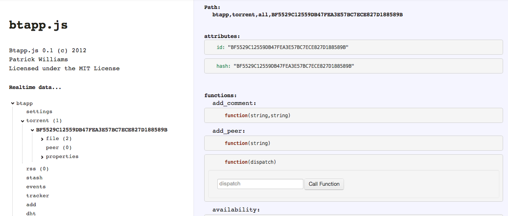Otro Material
Programando en Vivo: Aplicación DHT usando btapp.js por Patrick Williams en Vimeo.